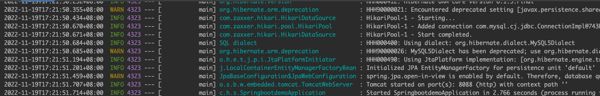
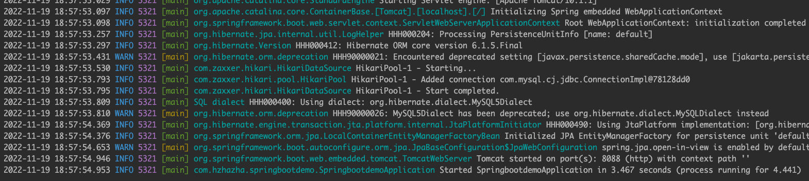
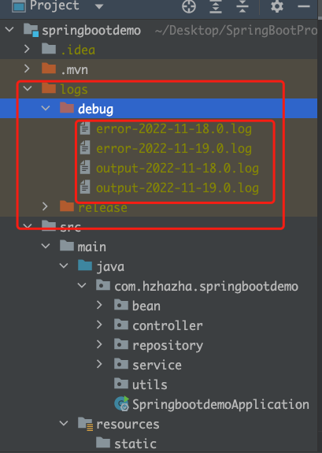

目的：为项目添加自定义的日志
前言
Logback是SpringBoot内置的日志处理框架，SpringBoot日常使用也是这个框架，是直接将日志输出到控制台，但是不会写到日志文件，如果是部署到服务器的话，一般开发人员或者运维人员不可能每天都在服务器上看着这个项目，所以是需要把日志输出到文件里面保存以便于查看的，然而Logback也有这样的功能。
你要问我为什么不用log4j？既然作为开发人员，那肯定是越精简的项目运行速度更快更稳定。所以，既然SpringBoot自带日志处理框架，那肯定用内置的撒。
SpringBoot默认的日志配置
日志记录器(Logger)的行为是分等级的，日志级别从低到高分为TRACE<DEBUG<INFO<WARN<ERROR<FATAL，如果设置为WARN，则低于WARN级别的日志都不会输出
SpringBoot内部使用logback作为系统日志实现的框架，将日志输出到控制台，不会写到日志文件。SpringBoot从控制台打印出来的日志级别默认只有INFO及以上级别，可以在application.properties中修改日志级别logging.level.root=WARN。
从上图可以看到，日志输出的内容如下
- 时间日期：精确到毫秒
- 日志级别：
ERROR，WARN，INFO，DEBUG，TRACE - 进程ID：
PID - 分隔符：
---标识实际日志的开始 - 线程名：方括号括起来（可能会截断控制台输出）
- Logger名：通常使用源代码的类名
- 日志内容：
SpringBoot启动顺序
logback-spring.xml -> application.properties 或者 application.yml -> logback.xml
所以建议自定义logback-spring.xml文件
SpringBoot自定义配置logback-spring.xml
在src/main/resources下创建logback-spring.xml文件，分开记录系统输出日志和Error日志：
<?xml version="1.0" encoding="UTF-8" ?>
<configuration>
<!-- 解决%clr不能识别问题 -->
<include resource="org/springframework/boot/logging/logback/defaults.xml"/>
<!-- 彩色日志输出格式 -->
<property name="CONSOLE_LOG_PATTERN" value="%clr(%d{yyyy-MM-dd HH:mm:ss.SSS}){faint} %clr(%level){blue} %clr(${PID}){magenta} %clr([%thread]){orange} %clr(%logger){cyan} %m%n${LOG_EXCEPTION_CONVERSION_WORD:-%wEx}" />
<!-- 非彩色日志输出格式 -->
<property name="PATTERN" value="%d{yyyy-MM-dd HH:mm:ss.SSS} [%thread] %-5level %logger{36} - %msg%n"/>
<!-- debug文件路径：src同级目录logs,如果上级目录不存在会自动创建 -->
<property name="DEBUG_FILE_PATH" value="./logs/debug" />
<!-- release文件路径 -->
<property name="RELEASE_FILE_PATH" value="./logs/release" />
<!-- 控制台输出 -->
<appender name="consoleAppender" class="ch.qos.logback.core.ConsoleAppender">
<encoder>
<pattern>${CONSOLE_LOG_PATTERN}</pattern>
</encoder>
</appender>
<!-- 按照每天生成输出日志文件 -->
<appender name="fileAppender" class="ch.qos.logback.core.rolling.RollingFileAppender">
<encoder>
<pattern>%d{yyyy-MM-dd HH:mm:ss.SSS} [%thread] %-5level %logger{36} - %msg%n</pattern>
</encoder>
<rollingPolicy class="ch.qos.logback.core.rolling.SizeAndTimeBasedRollingPolicy">
<fileNamePattern>${DEBUG_FILE_PATH}/output-%d{yyyy-MM-dd}.%i.log</fileNamePattern>
<maxFileSize>5MB</maxFileSize>
<maxHistory>30</maxHistory>
<totalSizeCap>1GB</totalSizeCap>
</rollingPolicy>
</appender>
<!-- 按照每天生成错误日志文件 -->
<appender name="errorAppender" class="ch.qos.logback.core.rolling.RollingFileAppender">
<filter class="ch.qos.logback.classic.filter.ThresholdFilter">
<level>ERROR</level>
</filter>
<encoder>
<pattern>%d{yyyy-MM-dd HH:mm:ss.SSS} [%thread] %-5level %logger{36} - %msg%n</pattern>
</encoder>
<rollingPolicy class="ch.qos.logback.core.rolling.SizeAndTimeBasedRollingPolicy">
<fileNamePattern>${DEBUG_FILE_PATH}/error-%d{yyyy-MM-dd}.%i.log</fileNamePattern>
<maxFileSize>5MB</maxFileSize>
<maxHistory>30</maxHistory>
<totalSizeCap>1GB</totalSizeCap>
</rollingPolicy>
</appender>
<!-- 开发环境：打印控制台 -->
<springProfile name="debug">
<logger name="com.hzhazha" level="debug" />
<root level="INFO">
<appender-ref ref="consoleAppender" />
<appender-ref ref="fileAppender" />
<appender-ref ref="errorAppender" />
</root>
</springProfile>
<!-- 生产环境：输出到文件 -->
<springProfile name="release">
<root level="INFO">
<appender-ref ref="releaseConsoleAppender" />
<appender-ref ref="releaseFileAppender" />
<appender-ref ref="releaseErrorAppender" />
</root>
</springProfile>
</configuration>然后通过在application.properties文件里面添加spring.profiles.active=debug/release来使用对应的配置
由此来区分debug环境和开发环境，我这只做了简单的配置，如要详细配置，可以去官网看文档。
logback-spring.xml文件说明
首先要一个根节点configuration，节点上如果加上scan="true"则会在修改配置文件后自动重新加载配置文件
写xml文件就像写java文件一样，include标签就是引用包，property就是设置变量
比较重要的就是Appender
这个就是配置控制台输出，或者是输出到文件，或者是指定级别的日志输出等
| 配置参数名 | 参数解释 |
|---|---|
| ConsoleAppender | 输出到控制台 |
| FileAppender | 输出到文件 |
| RollingFileAppender | 扩展FileAppender，可以滚动日志文件 |
| ThresholdFilter | 日志级别过滤器 |
| SizeAndTimeBasedRollingPolicy | 基于大小和时间的滚动（建议使用） |
将Appender全部配置完成之后写logback-spring.xml中的配置调用
使用springProfile节点来链接配置文件里面的spring.profiles.active=debug/release，以至于使用该配置文件里面具体的配置
spring.profiles.active=debug
<springProfile name="debug">
<root level="INFO">
<appender-ref ref="consoleAppender" />
<appender-ref ref="fileAppender" />
<appender-ref ref="errorAppender" />
</root>
</springProfile>以上配置完成之后就可以启动项目了。
启动项目之后控制台的样子：

我配置了输出到文件，目录里面会有logs：

这样配置完成之后，整个日志框架就算是配置完成了，感谢大家的阅读，下一期我将会整合`Redis`，然后写一些简单的调用，具体还需要各位去官网看文档，或者留言告诉我，我去解决然后更新文档